svg
| Stepper Motor |
| Basic Structure and Operating Principle of Stepper
Motors(uTube) (if not available) (2 min) Stepper Motor - How It Works(4:42)(YouTube) How does a Stepper Motor work ?(5:52)(YouTube) Stepper Motors and how to use them(6:46)(YouTube) Working principles of several stepper motors (bipolar, unipolar, reluctance and can-stack) (if not available)(37min) How a Stepper Motor works(uTube) (if not available) (6min) How the Stepper motors are made and how they operate - Part 1(uTube) (if not available) (5min) How the Stepper motors are made and how they operate - Part 2 (uTube) (if not available) (7 min) |
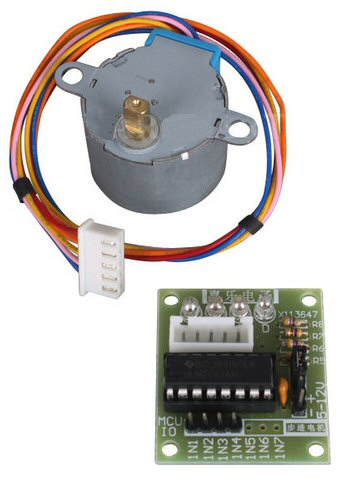 2048 steps per shaft revolution 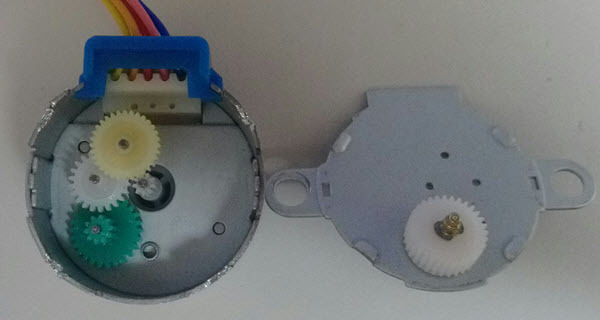 |
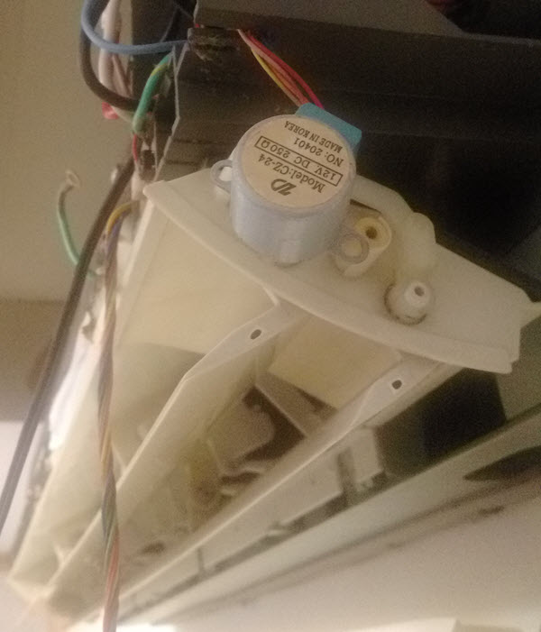 |
| 28BYJ-48 Stepper Motor Disassembly(uTube) (if not available)(9 min) |
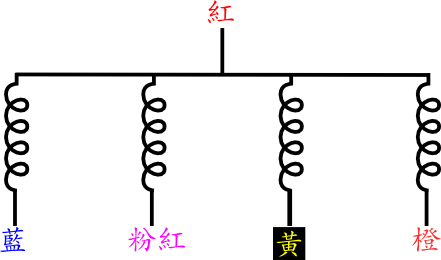 svg |
| ULN2003A |
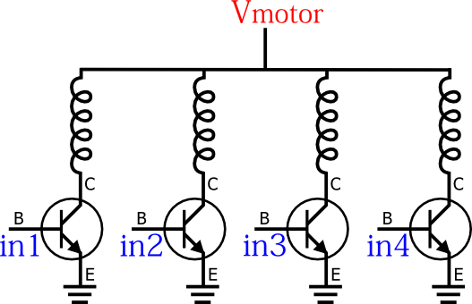 svg |
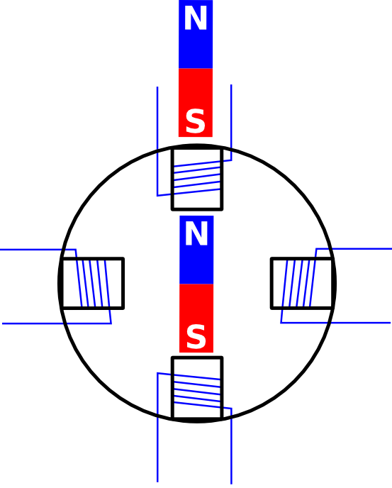 svg |
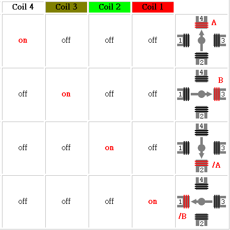 |
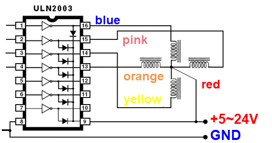 |
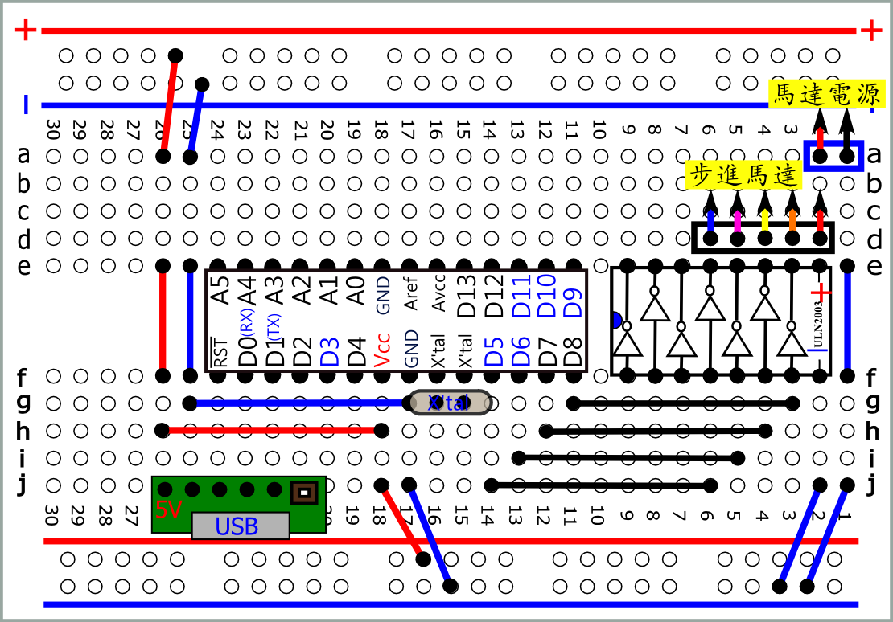 pdf svg |
| #define
in1 5 #define in2 6 #define in3 7 #define in4 8 int dt=5;//delay time void setup() { pinMode( in1 , OUTPUT); pinMode( in2 , OUTPUT); pinMode( in3 , OUTPUT); pinMode( in4 , OUTPUT); } void loop() { digitalWrite(in1,HIGH); digitalWrite(in2,LOW); digitalWrite(in3,LOW); digitalWrite(in4,LOW); delay(dt); digitalWrite(in1,LOW); digitalWrite(in2,HIGH); digitalWrite(in3,LOW); digitalWrite(in4,LOW); delay(dt); digitalWrite(in1,LOW); digitalWrite(in2,LOW); digitalWrite(in3,HIGH); digitalWrite(in4,LOW); delay(dt); digitalWrite(in1,LOW); digitalWrite(in2,LOW); digitalWrite(in3,LOW); digitalWrite(in4,HIGH); delay(dt); } |
| //
進階寫法 int pin[4]={5,6,7,8}; int out[4][4]={{1,0,0,0},{0,1,0,0},{0,0,1,0},{0,0,0,1}}; int dt=5 ;//delay time void setup() { for(int i=0;i<4;i++) pinMode( pin[i] , OUTPUT); } void loop() { for (int i=0;i<4;i++) { for(int j=0;j<4;j++) //四支腳分別送一次 { digitalWrite(pin[j],out[i][j]); } delay(dt); } } |
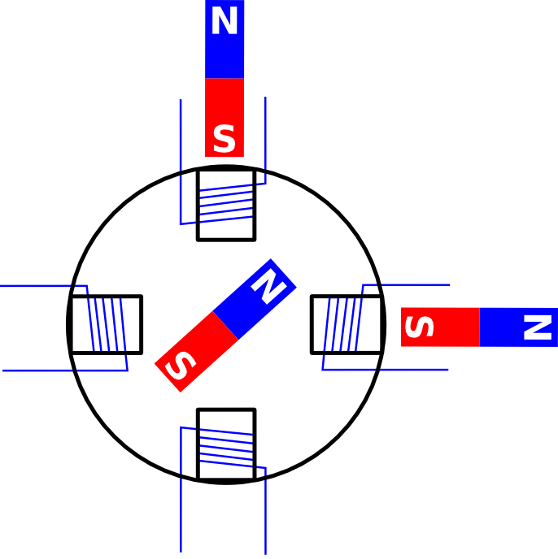 svg |
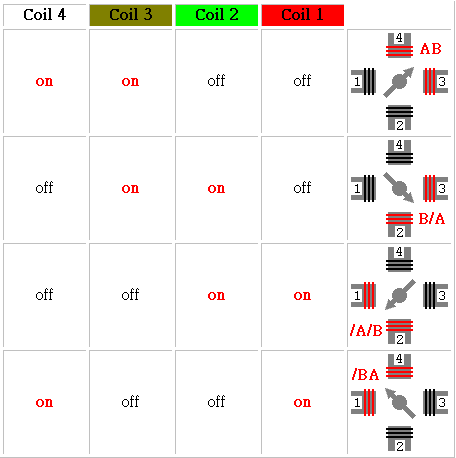 |
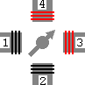 |
| #define
in1 5 #define in2 6 #define in3 7 #define in4 8 int dt=5;//delay time void setup() { pinMode( in1 , OUTPUT); pinMode( in2 , OUTPUT); pinMode( in3 , OUTPUT); pinMode( in4 , OUTPUT); } void loop() { digitalWrite(in1,HIGH); digitalWrite(in2,HIGH); digitalWrite(in3,LOW); digitalWrite(in4,LOW); delay(dt); digitalWrite(in1,LOW); digitalWrite(in2,HIGH); digitalWrite(in3,HIGH); digitalWrite(in4,LOW); delay(dt); digitalWrite(in1,LOW); digitalWrite(in2,LOW); digitalWrite(in3,HIGH); digitalWrite(in4,HIGH); delay(dt); digitalWrite(in1,HIGH); digitalWrite(in2,LOW); digitalWrite(in3,LOW); digitalWrite(in4,HIGH); delay(dt); } |
| //
進階寫法 int pin[4]={5,6,7,8}; int out[4][4]={{1,1,0,0},{0,1,1,0},{0,0,1,1},{1,0,0,1}}; int dt=5;//delay time void setup() { for(int i=0;i<4;i++) pinMode( pin[i] , OUTPUT); } void loop() { for (int i=0;i<4;i++) { for(int j=0;j<4;j++) { digitalWrite(pin[j],out[i][j]); } delay(dt); } } |
| //
轉一圈 #define in1 5 #define in2 6 #define in3 7 #define in4 8 int dt=5;//delay time void setup() { pinMode( in1 , OUTPUT); pinMode( in2 , OUTPUT); pinMode( in3 , OUTPUT); pinMode( in4 , OUTPUT); for (int k=0;k<512;k++) { digitalWrite(in1,HIGH); digitalWrite(in2,HIGH); digitalWrite(in3,LOW); digitalWrite(in4,LOW); delay(dt); digitalWrite(in1,LOW); digitalWrite(in2,HIGH); digitalWrite(in3,HIGH); digitalWrite(in4,LOW); delay(dt); digitalWrite(in1,LOW); digitalWrite(in2,LOW); digitalWrite(in3,HIGH); digitalWrite(in4,HIGH); delay(dt); digitalWrite(in1,HIGH); digitalWrite(in2,LOW); digitalWrite(in3,LOW); digitalWrite(in4,HIGH); delay(dt); } } void loop() { } |
| //
轉一圈 進階寫法 int pin[4]={5,6,7,8}; int out[4][4]={{1,1,0,0},{0,1,1,0},{0,0,1,1},{1,0,0,1}}; int dt=5;//delay time void setup() { for(int i=0;i<4;i++) pinMode( pin[i] , OUTPUT); for(int k=0;k<512;k++) { for (int i=0;i<4;i++) { for(int j=0;j<4;j++) { digitalWrite(pin[j],out[i][j]); } delay(dt); } } } void loop() { } |
| //
轉一圈 進階寫法 函式 int pin[4]={5,6,7,8}; int out[4][4]={{1,1,0,0},{0,1,1,0},{0,0,1,1},{1,0,0,1}}; void stepM(int steps,int dt) { for(int k=0;k<steps;k++) { for (int i=0;i<4;i++) { for(int j=0;j<4;j++) { digitalWrite(pin[j],out[i][j]); } delay(dt); } } } void setup() { for(int i=0;i<4;i++) pinMode( pin[i] , OUTPUT); stepM(512,5); //one turn 2048/4=512 } void loop() { } |
| 三相激磁 是否更有力? |
| 偵錯 : 步進馬達不轉 拿掉一條線 兩條線互換 |
如何找出 共接線? |
| 如何 將程式改為 for 迴圈? |
| 紅外線遙控器 控制步進馬達 |
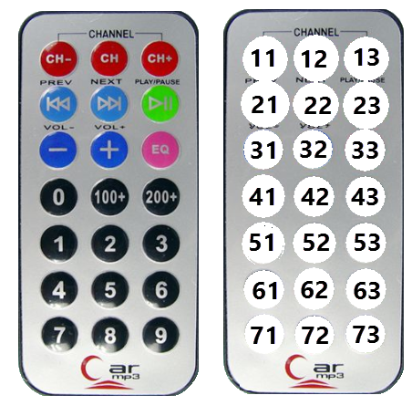 |
| 紅外線遙控器解碼板 |
svg |
| int
irin; int pin[4]={5,6,7,8}; int out[4][4]={{1,1,0,0},{0,1,1,0},{0,0,1,1},{1,0,0,1}}; void stepM(int steps,int dt) { for(int k=0;k<steps;k++) { for (int i=0;i<4;i++) { for(int j=0;j<4;j++) { digitalWrite(pin[j],out[i][j]); } delay(dt); } } } void setup() { Serial.begin(2400); for(int i=0;i<4;i++) pinMode( pin[i] , OUTPUT); } void loop() { if (Serial.available() > 0) { irin = Serial.read(); if (irin==0x11) stepM(512,5); //one turn 2048/4=512 if (irin==0x21) stepM(128,5); //1/4turn } } |
| //
增加LED指示 int irin; int pin[4]={5,6,7,8}; int out[4][4]={{1,1,0,0},{0,1,1,0},{0,0,1,1},{1,0,0,1}}; void stepM(int steps,int dt) { digitalWrite(A5,HIGH); for(int k=0;k<steps;k++) { for (int i=0;i<4;i++) { for(int j=0;j<4;j++) { digitalWrite(pin[j],out[i][j]); } delay(dt); } } digitalWrite(A5,LOW); } void setup() { Serial.begin(2400); for(int i=0;i<4;i++) pinMode( pin[i] , OUTPUT); pinMode(A5,OUTPUT); } void loop() { if (Serial.available() > 0) { irin = Serial.read(); if (irin==0x11) stepM(512,5); //one turn 2048/4=512 if (irin==0x21) stepM(128,5); //1/4turn } } |
| 車道柵欄 |
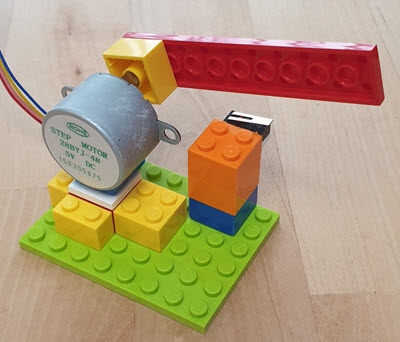 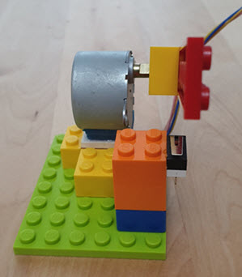 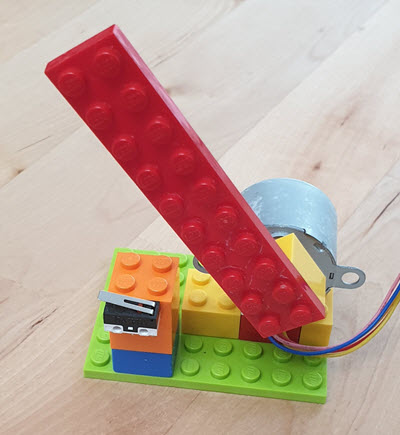 |
| int
irin; int pin[4]={5,6,7,8}; int out[4][4]={{1,1,0,0},{0,1,1,0},{0,0,1,1},{1,0,0,1}}; void stepM(int steps,int dt) { for(int k=0;k<steps;k++) { for (int i=0;i<4;i++) { for(int j=0;j<4;j++) { digitalWrite(pin[j],out[i][j]); } delay(dt); } } } void stepMrev(int steps,int dt) { for(int k=0;k<steps;k++) { for (int i=3;i>=0;i--) { for(int j=0;j<4;j++) { digitalWrite(pin[j],out[i][j]); } delay(dt); } } } void setup() { Serial.begin(2400); for(int i=0;i<4;i++) pinMode( pin[i] , OUTPUT); } void loop() { if (Serial.available() > 0) { irin = Serial.read(); if (irin==0x11) stepM(512,5); //one turn 2048/4=512 if (irin==0x21) stepMrev(512,5); //rev } } |
| 紅外線感應 |
| 藍芽遙控 |
| ESP8266 + Arduino 遙控 |
| Shift register74595(.pdf) (ref) |